Deepfake Detection¶
1. 目录¶
- 概述与背景
- 全图篡改检测方法（按年份排序）
- 部分篡改检测方法（按年份排序）
- 主要发现与未来展望
- 术语表
- 参考文献与资源链接
2. 概述与背景¶
深度伪造（Deepfake）技术的快速发展带来了图像真实性的严峻挑战。当前主流检测方法包括统计特征、频域分析、局部补丁分析等。近年来，轻量化定制生成模型和基础模型微调对抗检测成为新威胁。
主要贡献： - 对当前主流检测方法的训练与评估进行批判性分析。 - 评估用户定制生成模型下的检测性能。 - 探索基础模型生成对抗样本的新攻击方式。
3. 全图篡改检测方法（按年份排序）¶
3.1 2020¶
DCT - 年份：2020 - 作者：Joel Frank - 机构：Horst Görtz Institute for IT Security, Bochum, Germany - 论文链接：Leveraging Frequency Analysis for Deep Fake Image Recognition - 解读： DCT方法利用离散余弦变换（DCT）提取图像的频域特征，发现GAN和Diffusion生成的伪造图像在频谱上存在可区分的异常。具体实现上，作者将图像分解到频域，分析高频分量的分布，发现伪造图像在高频区域存在异常能量分布，尤其是上采样操作会引入checkerboard pattern等伪影。实验设置涵盖多种GAN和Diffusion模型生成的图像，DCT特征在多种检测任务中表现优异。 - 网络结构示意图： 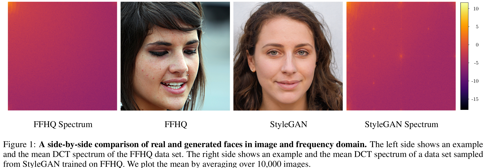 - 观点与经验：频域分析为检测深度伪造提供了新的视角，尤其对抗传统基于像素或纹理的检测方法。频域特征对不同生成器有较好泛化性，但对抗攻击下鲁棒性仍需提升。 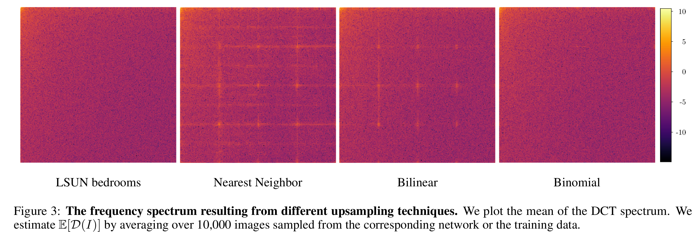
{kind=link}
{kind=link}
3.2 2023¶
DE-FAKE - 年份：2023 - 作者：Zeyang Sha - 机构：Salesforce Research - 论文链接：DE-FAKE: Detecting Text-to-Image Diffusion Fakes using Prompt-based Learning - 解读： DE-FAKE提出结合图像和文本提示的检测思路。具体实现为：分别训练图像-only和hybrid（图像+文本）检测器，图像only分支采用ResNet18，hybrid分支用CLIP提取图像和文本特征后拼接，送入MLP分类。数据方面，真实图像来自MSCOCO，伪造图像由Stable Diffusion等生成。 - 网络结构示意图： 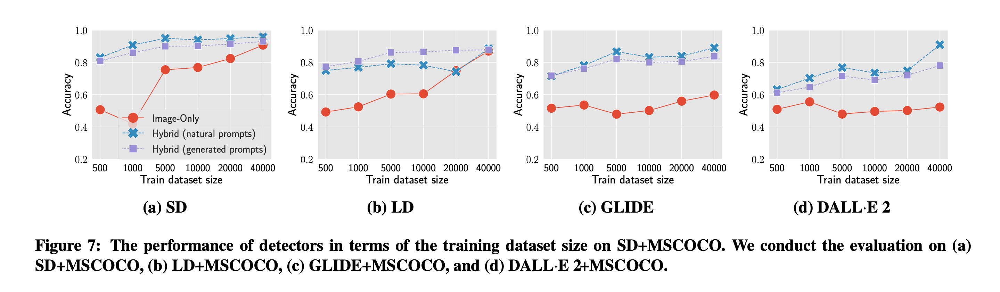 - 关键数学表达式： Hybrid分支特征拼接： $$ f_{hybrid} = [f_{image}; f_{text}] $$ 生成器归因为多分类交叉熵损失（常规cross-entropy loss）。 - 观点与经验：文本信息可有效辅助伪造检测，尤其在prompt驱动的生成场景。多模态特征融合、生成器归因分析、prompt语义聚类等值得借鉴。
{kind=link}
UnivCLIP - 年份：2023 - 作者：Sifat Muhammad Abdullah - 机构：未知（论文未特别注明，建议补充） - 论文链接：An Analysis of Recent Advances in Deepfake Image Detection in an Evolving Threat Landscape - 解读： UnivCLIP首次提出利用基础模型（如CLIP）进行深度伪造检测。实现上，直接用CLIP等大模型提取图像特征，训练简单分类器区分真伪。论文系统分析了基础模型特征的泛化性，发现其在标准生成器下表现优异，但在用户定制模型下性能下降。还设计了对抗攻击实验，模拟攻击者通过微调生成器欺骗检测器，结果显示基础模型特征对抗攻击鲁棒性较强。 - 网络结构示意图： 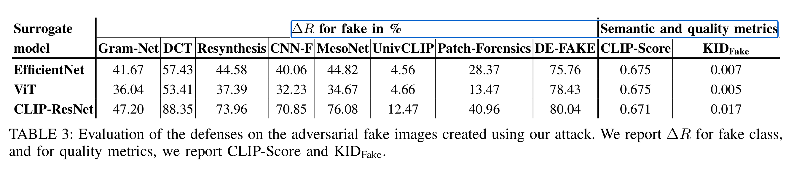 - 对抗攻击实验流程： 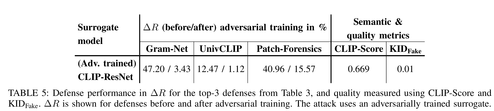 - 观点与经验：基础模型特征具备一定泛化能力，但单独依赖仍有限。基础模型特征与频域特征结合、对抗攻击防御实验设计值得借鉴。
{kind=link}
{kind=link}
4. 部分篡改检测方法（按年份排序）¶
4.1 2021¶
FakeLocator - 年份：2021 - 作者：Yihao Huang - 机构：East China Normal University - 论文链接：FakeLocator: Robust Localization of GAN-Based Face Manipulations - 解读： FakeLocator关注GAN人脸局部伪造区域的定位。实现上，利用GAN上采样伪纹理、灰度fakeness map（像素级强度标签）、face parsing注意力和单样本聚类。训练时只对真实图像做增强，伪图像不增强，提升模型对非真实分布的敏感性。推理时用t-SNE+k-means对特征聚类，仅需一个有标签样本即可区分真伪。 - 网络结构简要描述：编码器+fakeness map分支+face parsing注意力分支，输出灰度mask。 - 损失函数：采用L1损失。 - 观点与经验：无需目标域分类器，仅靠特征聚类实现跨GAN泛化。单样本聚类、attention引导、灰度mask设计值得借鉴。
4.2 2022¶
PSCC-Net - 年份：2022 - 作者：Xiaohong Liu - 机构：未知 - 论文链接：Progressive Spatio-Channel Correlation Network for Image Manipulation Localization - 解读： PSCC-Net提出空间-通道相关性模块（SCCM）和多尺度损失。实现上，网络每一层都预测掩码，逐步细化伪造区域定位，空间分支建模像素间结构，通道分支建模语义特征。损失为多尺度BCE加权和。 - 网络结构示意图： 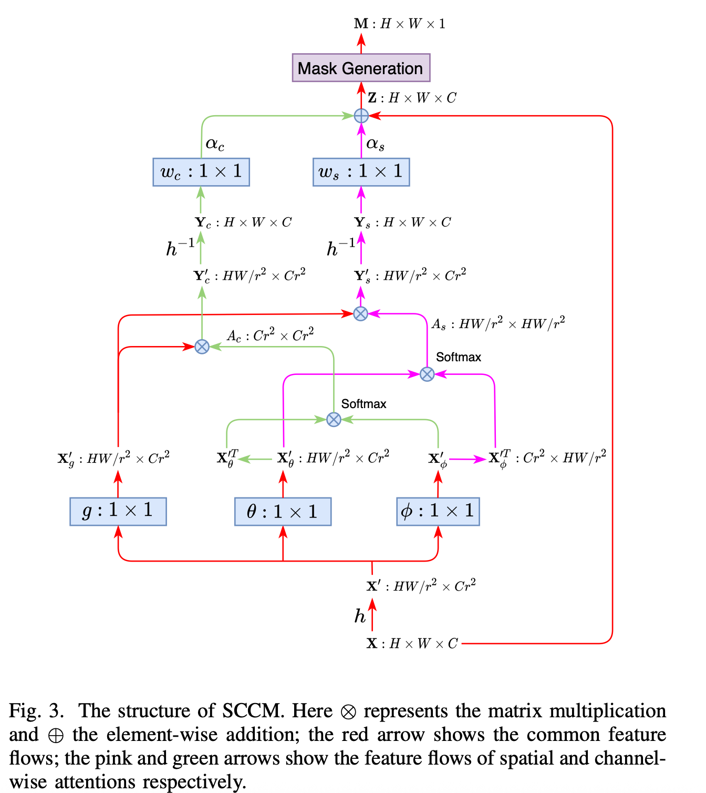 - 关键数学表达式： Progressive多尺度损失： $$ \mathcal{L}{total} = \sum $$ 其中每个尺度的损失为二元交叉熵。 - }^{S} \lambda_i \cdot \mathcal{L}_{i观点与经验：coarse-to-fine机制和空间-通道相关性可提升定位精度和泛化性。多尺度监督、空间-通道注意力、轻量化高效设计值得借鉴。
{kind=link}
4.3 2023¶
FOCAL - 年份：2023 - 作者：Haiwei Wu, Yiming Chen, Jiantao Zhou - 机构：University of Macau - 论文链接：Rethinking Image Forgery Detection via Contrastive Learning and Unsupervised Clustering - 代码链接：FOCAL GitHub - 解读： FOCAL将伪造检测转化为像素级对比学习+无监督聚类。实现上，训练时用改进InfoNCE损失在单图像内做像素级对比，推理时用HDBSCAN对特征聚类，自动区分伪造/真实区域。支持多backbone特征拼接，无需分类头。 - 网络结构简要描述：主干网络（如HRNet/ViT）+像素级特征输出，无分类头，推理阶段用聚类。 - 关键数学表达式： 改进InfoNCE损失（论文创新）： $$ \mathcal{L}{InfoNCE++} = -\log \frac{\exp(q \cdot k^+ / \tau)}{\sum $$ HDBSCAN聚类自动分簇。 - } \exp(q \cdot k / \tau)观点与经验：像素级对比学习避免了跨图像标签混淆，聚类推理提升跨域泛化。image-level contrastive、在线聚类、特征融合值得借鉴。
DADF
- 年份：2023
- 作者：Yingxin Lai
- 机构：Xiamen University
- 论文链接：Detect Any Deepfakes: Segment Anything Meets Face Forgery Detection and Localization
- 代码链接：DADF GitHub
- 解读：
DADF将Segment Anything与伪造检测结合。实现上，提出重建引导注意力机制：对原图加高斯噪声，提取原图与加噪图特征差异作为注意力，突出伪造区域。损失为L1范数。
- 网络结构示意图：
 - 损失函数：采用L1损失。
- 观点与经验：重建差异可有效引导模型关注伪造区域。重建引导注意力、特征差异建模、迁移大模型能力值得借鉴。
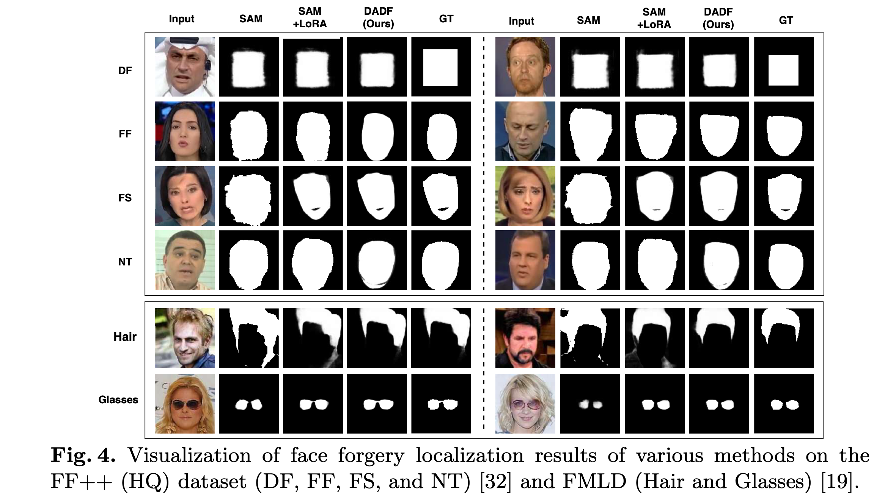
- 损失函数：采用L1损失。
- 观点与经验：重建差异可有效引导模型关注伪造区域。重建引导注意力、特征差异建模、迁移大模型能力值得借鉴。
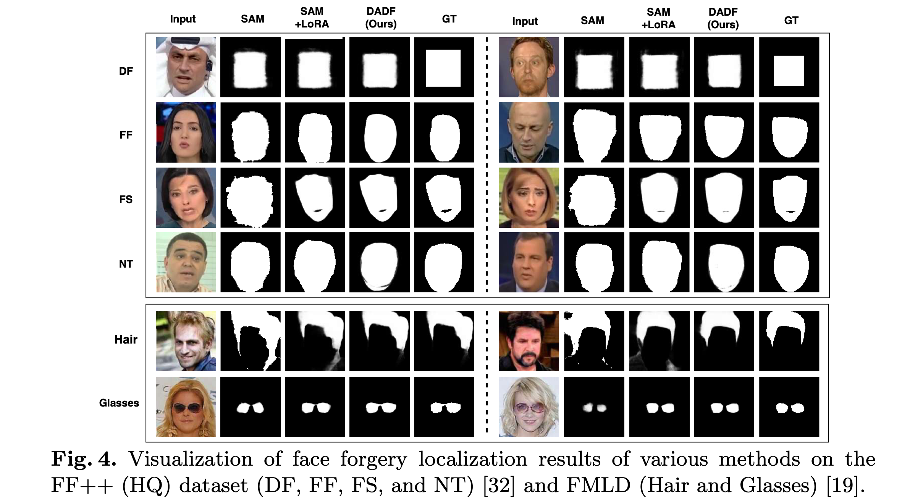
{kind=link}
Multi-Attention-Based Approach - 年份：2023 - 作者：Saima Waseem - 机构：Universiti Teknologi Malaysia, Johor, Malaysia - 论文链接：Multi‑attention‑based approach for deepfake face and expression swap detection and localization - 代码链接：Multi-Attention GitHub - 解读： 该方法提出多重注意力机制的U-Net结构，融合空间和频域特征。实现上，空间-通道注意力模块嵌入编码器和解码器，频域特征用FFT提取，Bilinear Pooling融合。损失为分类+定位回归（交叉熵+L1/L2）。 - 网络结构示意图： 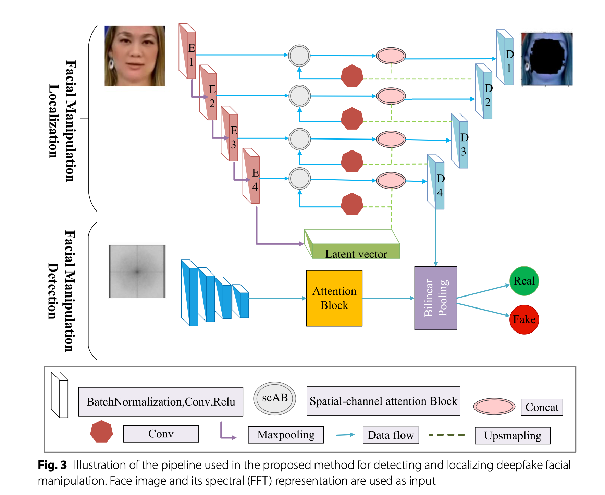 - 关键数学表达式： 多任务损失（论文创新）： $$ L_{comb} = \rho_{class} L_{class} + \rho_{localize} L_{localize} $$ 其中\(L_{class}\)为二分类交叉熵，\(L_{localize}\)为L1/L2回归损失。 - 观点与经验：空间+频域融合和多任务训练提升了跨数据集鲁棒性。多重注意力、频域融合、数据增强值得借鉴。
{kind=link}
4.4 2024¶
SIDA - 年份：2024 - 作者：Zhenglin Huang - 机构：University of Liverpool, UK - 论文链接：SIDA: Social Media Image Deepfake Detection, Localization and Explanation with Large Multimodal Model - 解读： SIDA针对社交媒体图像伪造，提出多任务大模型。实现上，训练目标包括检测损失、分割掩码损失（BCE+Dice）、文本生成损失。 - 网络结构示意图： 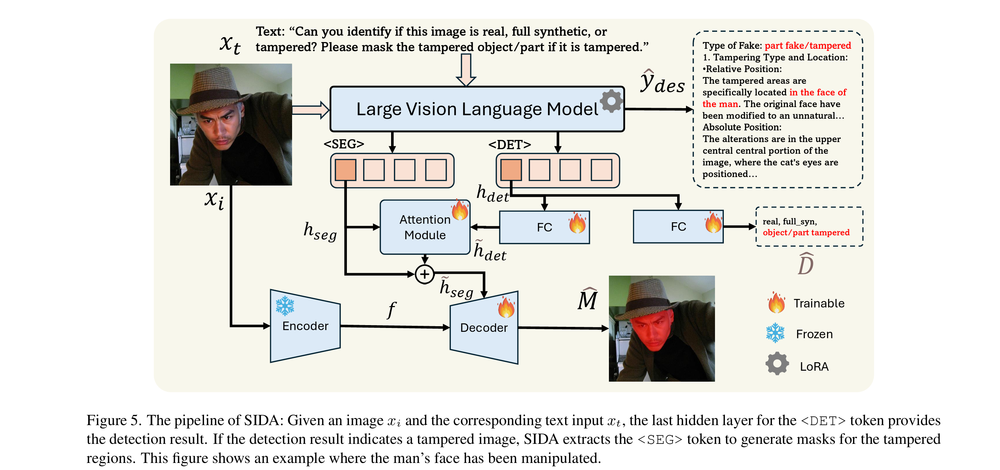 - 关键数学表达式： 分割损失（BCE+Dice）： $$ \mathcal{L}{mask} = \lambda} \mathcal{L{BCE}(\hat{M}, M) + \lambda} \mathcal{L{DICE}(\hat{M}, M) $$ 文本生成损失为交叉熵。 总损失： $$ \mathcal{L}} = \lambda_{det} \mathcal{L{det} + \lambda} \mathcal{L{mask} + \lambda $$ - } \mathcal{L}_{txt观点与经验：多任务训练和多模态融合是未来趋势。多任务损失、文本生成解释、社交媒体场景适配值得借鉴。
{kind=link}
Weakly-supervised Deepfake Localization - 年份：2024 - 作者：Dragos-Constaintin Tantaru - 机构：Bitdefender - 论文链接：Weakly-supervised deepfake localization in diffusion-generated images - 代码链接：Dolos GitHub - 解读： 该论文系统分析弱监督伪造区域检测设计空间。实现上，统一用Xception架构，比较GradCAM、Patch-Forensics、Attention三类方法，支持弱/全监督。数据集构建控制变量，分析生成器/监督/数据源影响。 - 网络结构示意图： 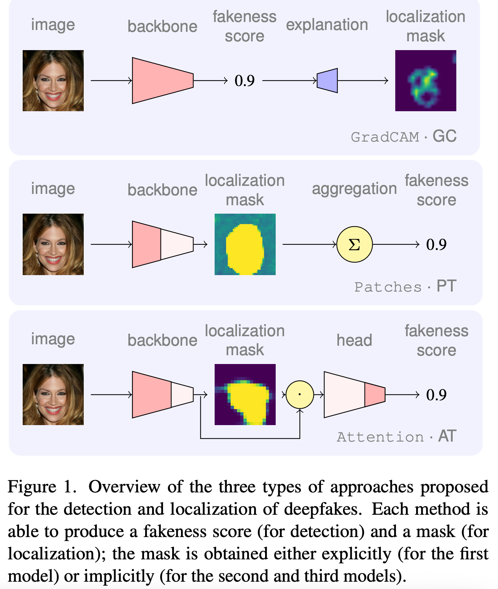 - 关键数学表达式： Patch-Forensics分支损失为patch级交叉熵，Attention分支损失为BCE。 - 观点与经验：局部得分法对弱监督敏感性低，泛化性好。弱监督设计、patch级损失、数据集构建方法值得借鉴。 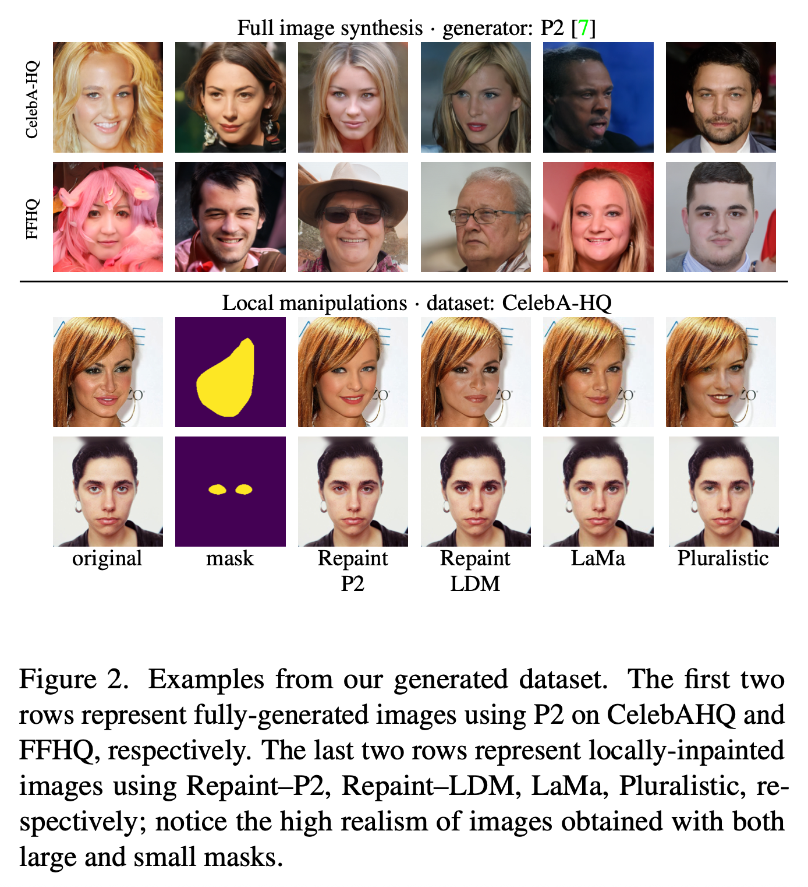 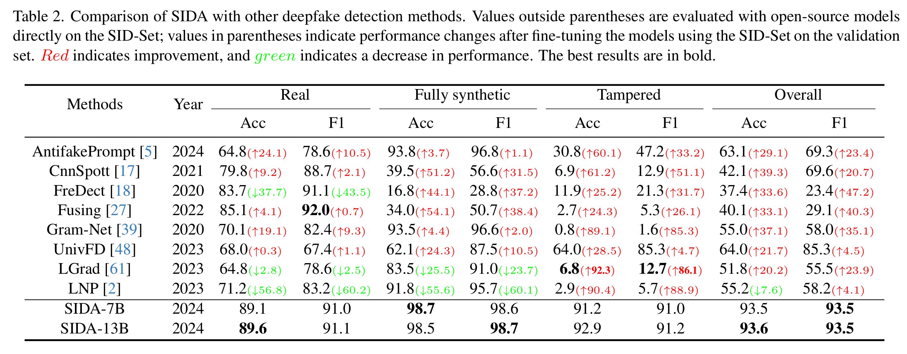
{kind=link}
{kind=link}
{kind=link}
DeCLIP - 年份：2024 - 作者：Stefan Smeu - 机构：Bitdefender - 论文链接：DeCLIP: Decoding CLIP representations for deepfake localization - 代码链接：DeCLIP GitHub - 解读： DeCLIP首次用CLIP特征做伪造定位。实现上，ViT/ResNet提取特征，卷积解码器解码为像素级掩码，支持多层特征融合。训练目标为二元交叉熵mask预测。 - 网络结构示意图： 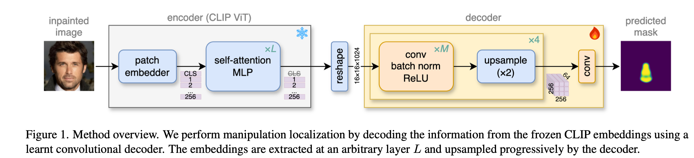 - 损失函数：采用BCE损失。 - 观点与经验：ViT和ResNet特征互补，LDM-inpainted数据提升泛化。多backbone融合、解码器设计、OOD泛化实验值得借鉴。
{kind=link}
FSBI - 年份：2024 - 作者：Ahmed Abul Hasnanaath - 机构：King Fahd University of Petroleum and Minerals - 论文链接：FSBI: Self-Blended Images for Generalized Deepfake Detection - 代码链接：FSBI GitHub - 解读： FSBI提出自混合图像（SBI）合成和小波频域特征。实现上，单图像做两次不同增强，检测人脸关键点生成mask，融合两图生成SBI伪造样本。频域特征用小波变换提取RGB三通道系数。 - 网络结构示意图： 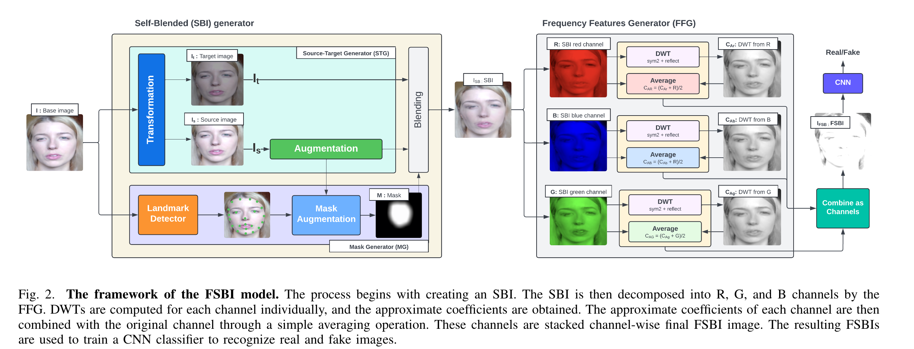 - 关键数学表达式： SBI合成公式： $$ I_{SBI} = I_s \cdot M + I_t \cdot (1 - M) $$ 频域特征提取：对每个通道做小波变换，拼接后输入检测器。 - 观点与经验：SBI方法提升伪造样本多样性，频域特征提升泛化。自混合伪造、频域特征、数据增强值得借鉴。
{kind=link}
5. 主要发现与未来展望¶
主要发现： - 基础模型和频域特征结合效果最佳。 - 频域分析优于传统CNN模型。 - 微调基础模型有助于提升跨生成器检测能力。 - 上采样操作易引入伪造纹理，可作为检测线索。
5.1 主流思路与流派分类¶
5.1.1 1. 数据处理与增强流派¶
- FSBI：提出自混合图像（SBI）合成方法，通过多种图像增强和人脸局部混合生成伪造样本，提升检测模型的泛化能力。
- FakeLocator：利用GAN上采样伪纹理、灰度fakeness map、face parsing注意力和单样本聚类，提升跨GAN泛化能力。
- Weakly-supervised Deepfake Localization：构建大规模高质量的局部伪造数据集，支持多种生成器和监督方式的对比实验。
- Multi-Attention-Based Approach：采用多样化数据增强（如高斯噪声、JPEG压缩）提升模型鲁棒性。
5.1.2 2. 网络结构创新流派¶
- PSCC-Net：空间-通道相关性模块和多尺度损失，逐步细化伪造区域定位。
- Multi-Attention-Based Approach：多重注意力机制的U-Net结构，融合空间和频域特征。
- DeCLIP：基础模型（CLIP）特征与卷积解码器结合，实现像素级伪造定位。
- DADF：重建引导的注意力机制，结合Segment Anything模型。
- UnivCLIP：首次提出利用基础模型（如CLIP）进行深度伪造检测。
5.1.3 3. 损失函数与训练目标流派¶
- FOCAL：像素级对比学习+无监督聚类，提升跨域稳健定位能力。
- SIDA：多任务损失（检测、分割、文本生成）联合训练。
- PSCC-Net：多尺度损失，兼顾粗到细的定位精度。
- DADF：重建引导的注意力损失，突出伪造区域。
- Weakly-supervised Deepfake Localization：多种监督方式（弱监督/全监督），mask回归与分类任务结合。
- DE-FAKE：生成器归因损失，支持伪造源识别。
5.1.4 4. 其他创新点与流派¶
- UnivCLIP/FOCAL/DeCLIP：关注跨域/泛化能力提升，基础模型特征与频域特征结合。
- UnivCLIP：对抗攻击防御实验，分析基础模型鲁棒性。
- FSBI：提升对未知伪造类型的鲁棒性。
未来展望： - 多模态检测与视频级检测。 - 更强的对抗攻击防御。 - 实际应用场景与产业落地。
本节小结：深度伪造检测正向更强泛化、更高定位精度和更强鲁棒性方向发展。
6. 术语表¶
- 基础模型（Foundation Model）：如CLIP等大规模预训练模型。
- 频域特征：通过傅里叶变换等方法提取的图像频率信息。
- 对抗攻击：通过微小扰动欺骗检测模型的攻击方式。
- 局部伪造：仅部分区域被篡改的图像。
7. 参考文献与资源链接¶
全文Takeaway：深度伪造检测领域方法众多，基础模型与频域特征结合、定位能力提升、对抗攻击防御和实际应用落地是未来发展重点。
💬 Comments Share your thoughts!